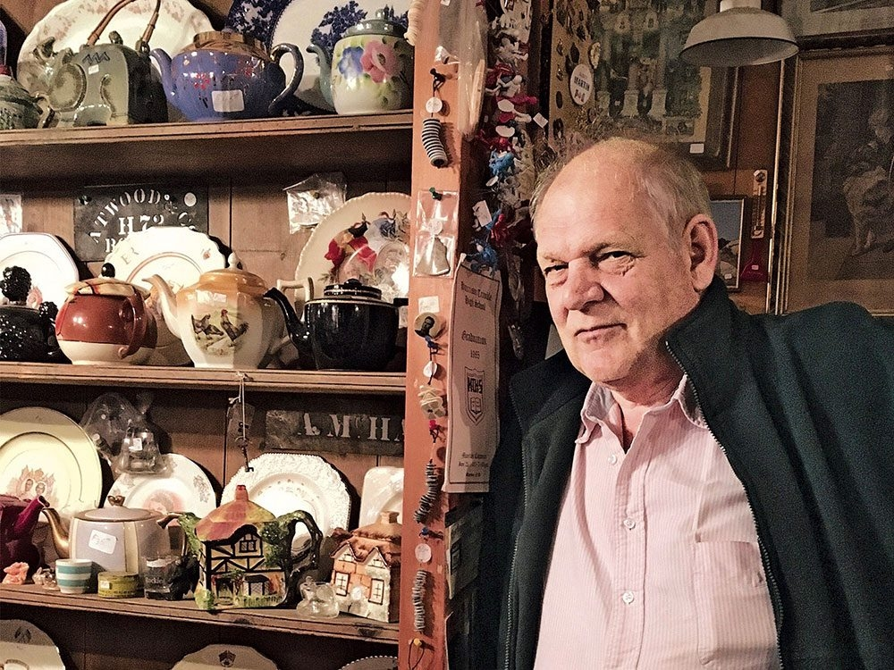
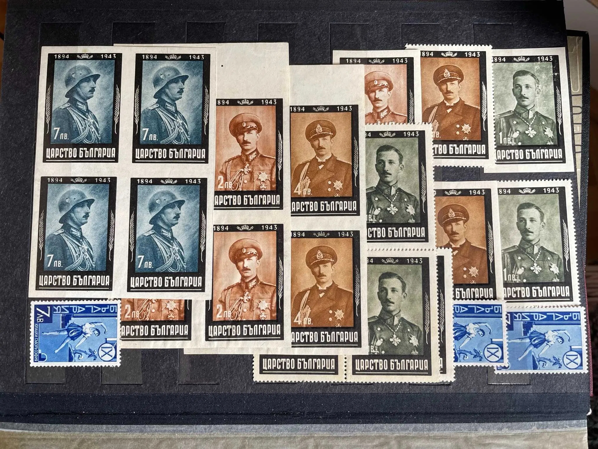
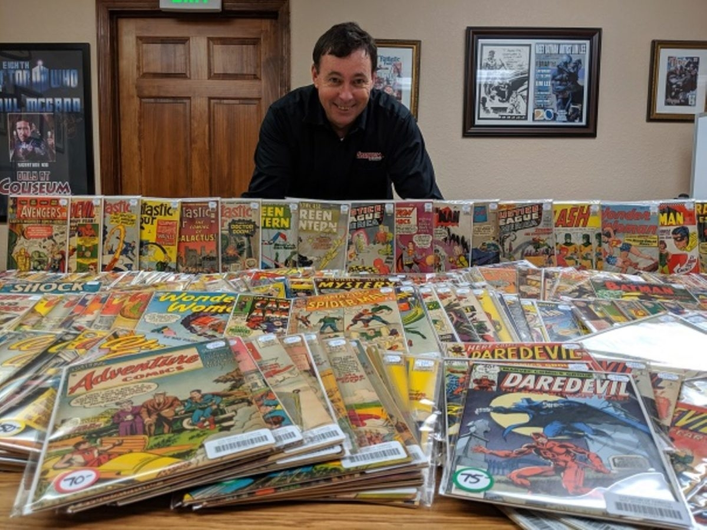
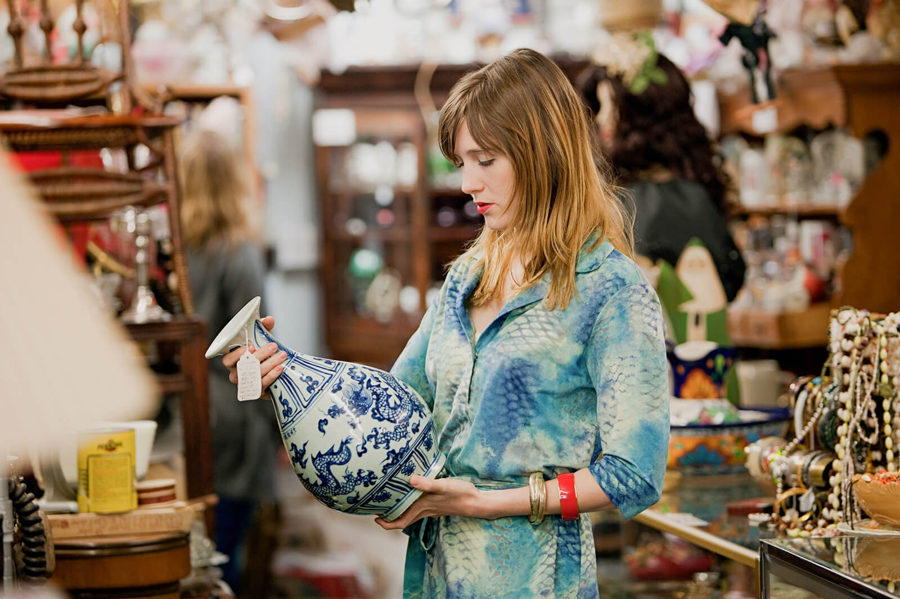
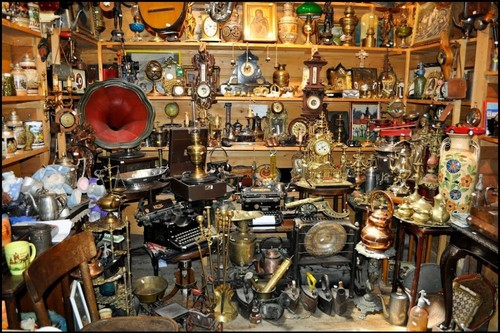
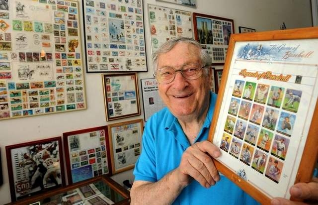
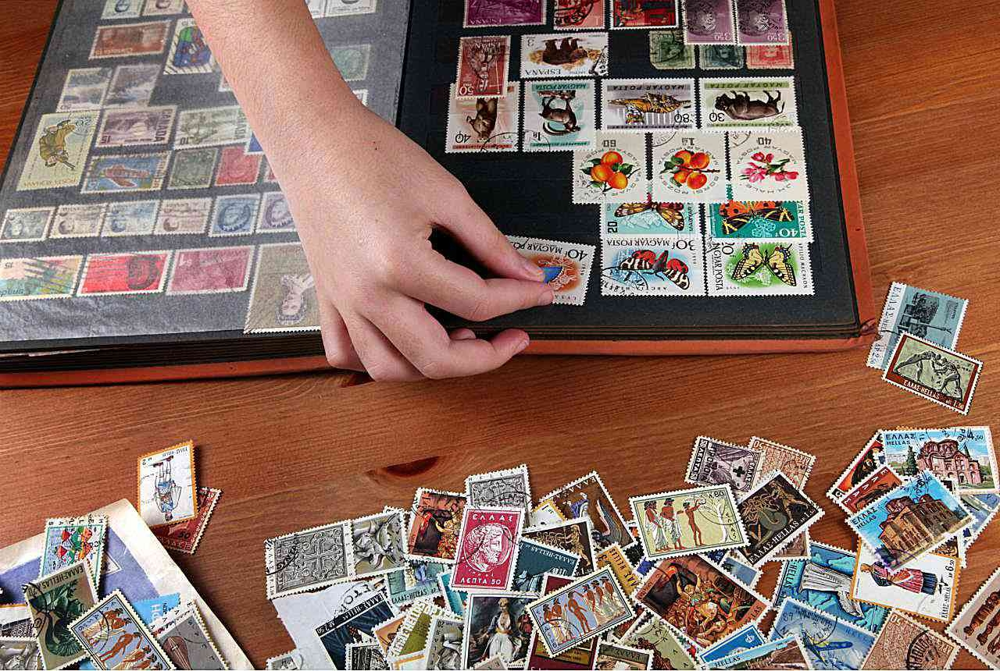
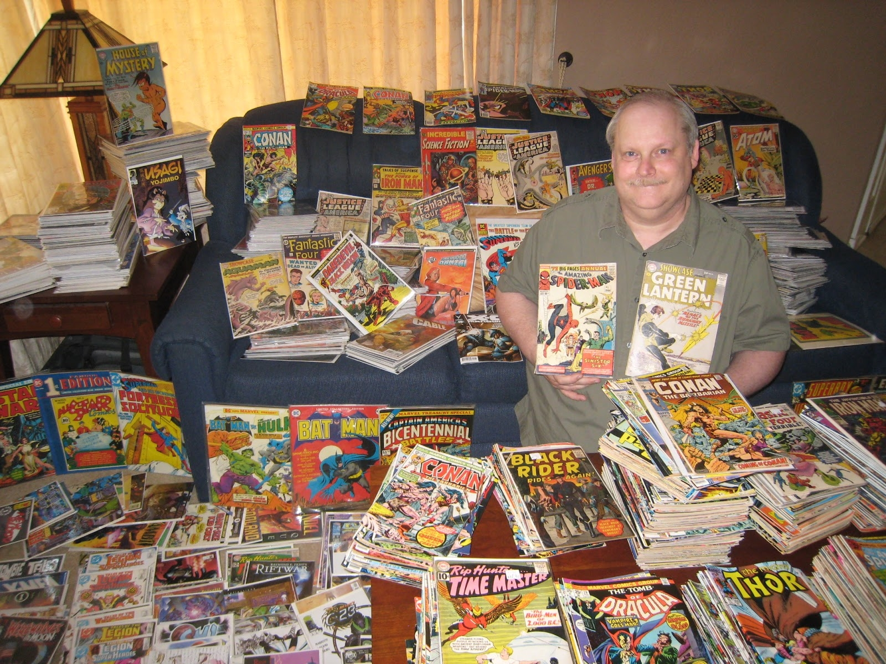
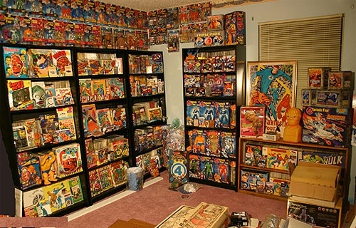

Домашни
Колекционерски
Креативни
Изработка
Обогатяващи
На открито
Социални
Спорт
Колекционерски
Представляват събирането на специфични, еднородни предмети.
Колекционерството не значи просто да дадеш пари за скъпа чаша. Неслучайно това занимание е толкова известно. Колекцията показва отдаденост, а процесът на създаването и може да ви разведе из света в търсенето на неуловими реликви.

Aнтики

Mарки

Kомикси
×
Колекциониране на антики




Колекционирането на антики е едно от по-скъпите хобита, с които можете да се захванете, но за ентусиастите на тема
„история“ няма по-добро. Събирането на древни реликви или модерни съкровища може да ви отведе до непознати исторически
извори и да ви срещне с хора също толкова любознателни като вас.
×
Колекциониране на марки




Колекционирането на марки е популярно от 19-ти век и развитието на пощенските услуги, както по света, така и у нас.
Много вероятно е и вашите родители да имат забравена колекция от стари марки в тавана или мазето, като можете да
използвате шанса да започнете да я допълвате с модерни такива.
×
Колекциониране на комикси




Знаехте ли, че най-скъпият комикс някога е „Amazing Fantasy #15“-първата поява на Спайдър-мен.
Комиксите имат монументално влияние върху съвременния художествен свят, пряко или не. Ако смятате, че съвременните
адаптации на тези истории за свръхестественото са ви повлияли значително, можете да изразите отношението си като
започнете нова колекция от графични романи.